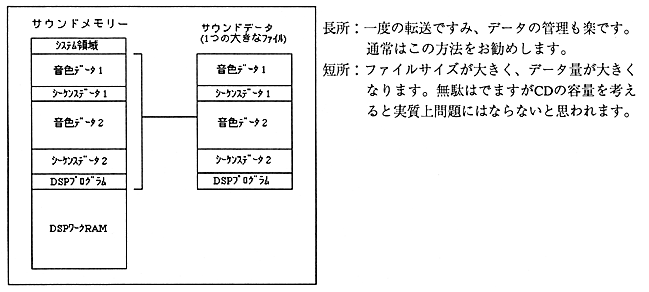
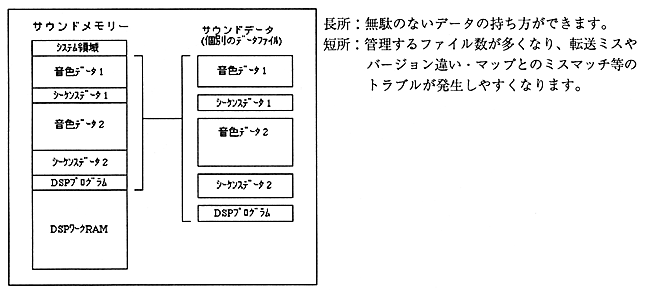

Return to previous page ｜ Return to menu ｜ Go to next page
6.2 How to have sound data
There are the following two methods for holding sound data. There is a method to have all 512MB of sound memory as one file and a method to have all data as separate files. Each has its advantages and disadvantages, so please select the best method according to the game and scene.
□ How to have the whole as one file

□ How to have multiple files individually

For the above reasons, it is recommended that sound data is usually held in one large file, and if the data is replaced, only the replacement data is stored as a separate data file.
Return to previous page ｜ Return to menu ｜ Go to next page